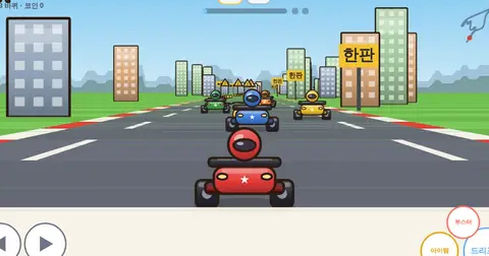

씽씽 카트
Zoom Kart
레이싱 · 아이템전무료설치 없음폰 · PC
▶ 지금 바로 하기로그인 없이 브라우저에서 바로 시작돼요
어떤 게임인가요?
아이템 상자를 먹고 물풍선·미사일·바나나로 견제! 드리프트를 길게 할수록 불꽃이 파랑→주황→보라로 바뀌며 더 센 가속. 코인을 모아 더 빠른 카트를 사세요.
목표 · CPU 카트 7대와 3바퀴 아이템전. 1위를 노리고 코인을 모아 더 좋은 카트를 사세요.
이렇게도 찾아요
카트 게임레이싱 게임카트 레이싱아이템전 레이싱자동차 경주kart racingracing gameitem race
#카트게임 #레이싱게임 #아이템전
게임 방법
- 자동으로 달려요. 도로 밖 풀밭에서는 느려져요.
- 드리프트 버튼을 누른 채 꺾으면 미끄러져요. 같은 방향으로 더 꺾으면 크게, 반대로 꺾으면 작게 돌아요.
- 길게 미끄러질수록 불꽃이 하양 → 파랑 → 주황 → 보라. 손을 떼는 순간 그 색만큼 가속!
- 드리프트를 끝내자마자 드리프트 버튼을 한 번 더 톡: 순간 부스터.
- 게이지가 차면 부스터 1개(최대 2개). 부스터 중엔 앞 차를 밀어낼 수 있어요.
- ? 상자: 아이템 (2칸). 순위가 낮을수록 센 아이템이 나와요.
- 원뿔·통나무·게·기름·바나나에 닿으면 미끄러지거나 느려져요.
- 코인과 순위 상금으로 차고에서 카트를 사요. 카트마다 속도·가속·핸들·드리프트가 달라요.
등장하는 것들
- 부스터 · 바로 가속
- 바나나 · 뒤에 떨어뜨려 함정
- 물풍선 · 앞 차를 잠깐 가둠
- 미사일 · 멀리 있는 앞 차까지 따라가 명중
- 방패 · 공격 1번 막음
- 자석 · 앞 차를 향해 끌려가듯 가속
- 번개 · 뒤처졌을 때만 · 모든 상대 멈칫
공략 팁
- 긴 커브 입구에서 드리프트를 시작해 보라 불꽃까지 버티면 엄청 빨라요.
- 1~2위일 땐 바나나·방패를 아껴 두었다가 뒤에서 미사일이 오면 방패!
- 코인 줄은 커브 안쪽에 많아요. 드리프트하면서 쓸어 담으세요.
 과일 합치기
과일 합치기 2048
2048 색실 잇기
색실 잇기 윷놀이
윷놀이 방울 터뜨리기
방울 터뜨리기 사과 10 만들기
사과 10 만들기